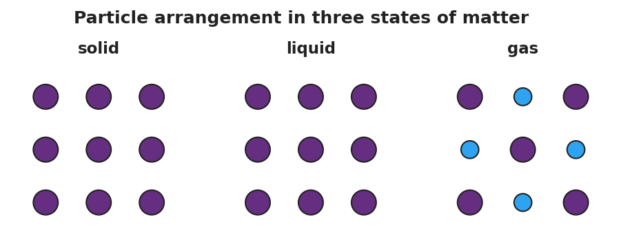
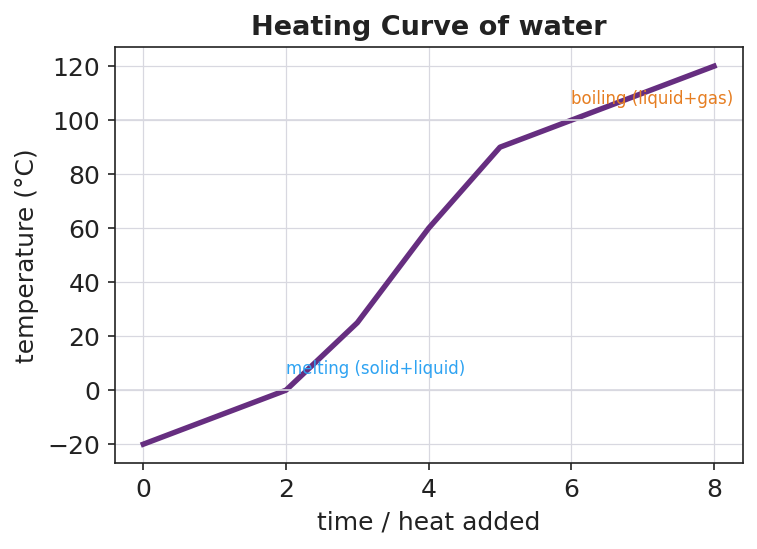

01 Phenomenon
A block of dry ice — solid carbon dioxide, CO₂(s) — and a beaker of ordinary water ice both sit on the warm front table. Both are cold solids in the same warm room. But they behave completely differently. The water ice melts into a puddle of liquid water and then slowly evaporates. The dry ice gives off thick white fog and shrinks — but it never leaves a puddle. The solid turns straight into a gas, skipping the liquid phase entirely.
02 Driving question
Why does dry ice (solid CO₂) skip the liquid phase entirely?
03 Notice & wonder
| I notice… | I wonder… |
|---|---|
Turn & Talk #1: Both solids are absorbing energy from the same warm room. The water ice becomes a liquid first; the dry ice goes straight to gas. In one sentence, what might be different about how tightly the particles are held in each solid?
04 Initial model
Before your teacher names anything, draw the particles of one substance in three boxes — as a solid, as a liquid, and as a gas. In each box, show how close together the particles are and add arrows for how fast they move. Between the boxes, draw an arrow and label whether you ADD or REMOVE energy to get from one state to the next.
| SOLID | LIQUID | GAS |
|---|---|---|
Energy arrows (label ADD or REMOVE):
Solid → Liquid: ____________ Liquid → Gas: ____________
05 Investigate
Part 1 — Particle model: compare the three states
Study the figure below. For each state, record how the particles are arranged, how much they move, and whether the shape and volume are fixed.

| State | How are the particles arranged? | How much do they move? | Definite shape? Definite volume? |
|---|---|---|---|
| Solid | |||
| Liquid | |||
| Gas |
Key question: As you go from solid → liquid → gas, what happens to the space between the particles, and what must you add to make that happen?
Part 2 — The heating curve and the six phase changes
Watch the Javalab “Boiling Point” simulation (or study the figure) as energy is added to a sample at a steady rate.

- The line goes flat at 0 °C and again at 100 °C. What is happening to the substance during each flat part?
0 °C plateau: _______________________________________________
100 °C plateau: _______________________________________________
- During a flat plateau you are still adding energy, but the temperature does not rise. Where is that energy going?
- Complete the phase-change table. Name each change and mark whether energy is absorbed (added) or released (removed).
| Starting state | → Ending state | Phase change | Energy absorbed or released? |
|---|---|---|---|
| solid | → liquid | ||
| liquid | → solid | ||
| liquid | → gas | ||
| gas | → liquid | ||
| solid | → gas | ||
| gas | → solid |
06 Make it make sense
For each scenario, name the phase change, state whether energy is absorbed or released, and explain in one sentence what is happening to the particles.
Solid iodine crystals are gently warmed in a sealed tube and a purple gas appears above the crystals — no liquid forms.
- Phase change: _______________________________________________
- Energy absorbed or released? _______________________________________________
- What is happening to the particles? _______________________________________________
Liquid water in a freezer tray turns into solid ice cubes overnight.
- Phase change: _______________________________________________
- Energy absorbed or released? _______________________________________________
- What is happening to the particles? _______________________________________________
The dry ice on the front table (solid CO₂) shrinks and gives off gas, but never leaves a puddle.
- Phase change: _______________________________________________
- Energy absorbed or released? _______________________________________________
- Why is there no puddle? _______________________________________________
07 Key vocabulary
- phase change
- a physical change in which a substance moves from one state of matter (solid, liquid, or gas) to another; the substance's identity is conserved — only the energy, arrangement, and motion of its particles change
- sublimation
- the phase change in which a solid turns directly into a gas without passing through the liquid state; energy is absorbed; dry ice (solid CO₂) is the classic example (the reverse, gas → solid, is deposition)
- kinetic energy
- the energy of motion; the more kinetic energy a substance's particles have, the faster they move and the farther apart they spread, so adding energy pushes a substance toward the gas state and removing it pushes toward the solid state
Use each term in a sentence about today’s phenomenon or investigation. Do not copy the definition — use the word to describe something you observed or did.
phase change: _______________________________________________ _______________________________________________
sublimation: _______________________________________________ _______________________________________________
kinetic energy: _______________________________________________ _______________________________________________
08 Revise your model
Return to your Initial Model (the three particle boxes). Improve it:
Label each box with its kinetic-energy level: lowest, middle, or highest.
Label each arrow between boxes with the correct phase-change name and “energy in” or “energy out.”
Add one new arrow drawn directly from the solid box to the gas box (skipping the liquid). Label it: _______________
Then finish this Because / But / So sentence about the phenomenon:
Dry ice gives off gas and shrinks but never leaves a puddle because __________________________________________, but __________________________________________, so __________________________________________.
09 Exit ticket
- On a cool night, white naphthalene vapor from a mothball forms solid crystals directly on the underside of a cold jar lid — no liquid ever forms.
Phase change: _________________ Energy absorbed or released? _________________
- Hot steam from a shower turns into tiny liquid droplets that fog a cold bathroom mirror.
Phase change: _________________ Energy absorbed or released? _________________
- In one sentence, explain in terms of energy and particle motion why dry ice sublimes instead of melting.
10 Explore further
- Dry ice sublimation demo (teacher-led): Observe CO₂(s) subliming with no liquid phase, compared side-by-side with melting water ice. Capture "I notice / I wonder" observations. Insulated gloves and tongs required; ventilate the room; never seal dry ice in a closed container. Connect observations to the particle-model figure `figures/states_of_matter_particles.png`.
- Boiling Point — Javalab (Ice or Water, Ethanol): Using the Javalab "Boiling Point" / heating simulation (javalab.org), students add heat to a sample and watch the temperature-vs-time graph build. They identify the two flat plateaus — melting and boiling — where temperature holds steady even as energy is added. This produces a heating curve students can compare to `figures/heating_curve_water.png`. (If internet is unavailable, the figure alone supports the same discussion.)
- Particle-model drawings: Students draw the particle arrangement and relative motion of a substance as a solid, a liquid, and a gas, then annotate each phase change with an arrow showing whether energy is added or removed.